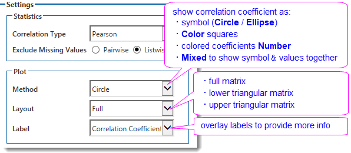
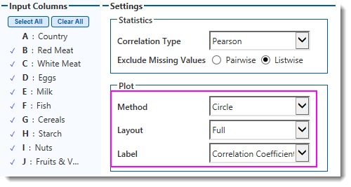
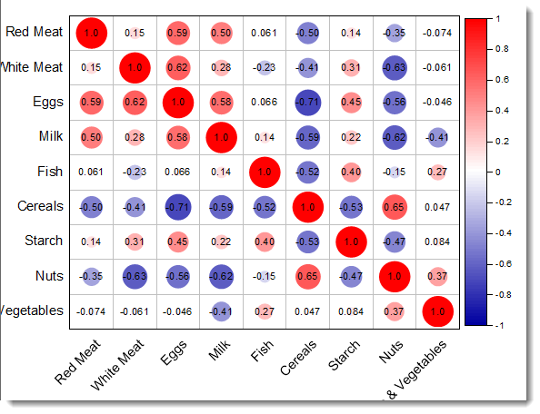
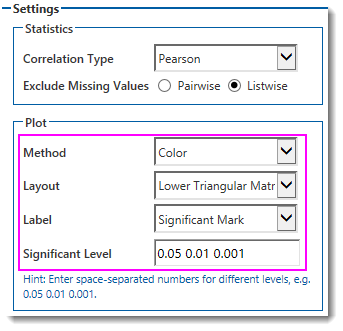
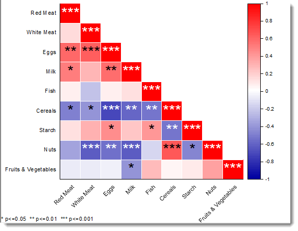
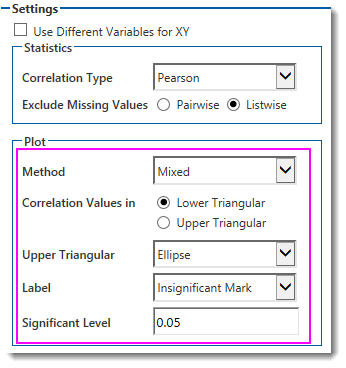
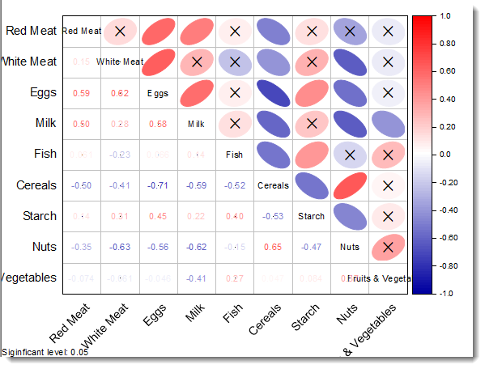

相関プロット(Pro)
Correlation-Plot
概要
この相関プロットアプリは、相関係数の行列をプロットでき、変数間の関係を明らかにするのに非常に有用です。
相関係数は円、楕円、色付き正方形,色付き係数値で可視化でき、シンボルと係数の値を両方表示する複合図にもできます。そして相関行列を全セルにレイアウトしてプロットするか、上下三角のみプロットするかを選ぶことができます。さらに、グラフ上にラベルを重ねて、相関係数値、p値、または統計学的に有意でない変数のペアを示すためマークまたは有意マークといった、多くの情報を表示できます。

チュートリアル
このチュートリアルでは、アプリに組み込まれているサンプルプロジェクトを使用します。このサンプルOPJUファイルを開くには、
- アプリギャラリーで相関プロットアプリアイコンを右クリックして、サンプルフォルダを開くを選択します。
- フォルダが開きます。プロジェクトファイルCorrelationPlotEx.opjuをフォルダからOriginにドラッグアンドドロップします。
| Note:このプロジェクトを変更後に保存したい場合は、別のフォルダ(例: User Files Fフォルダなど)に保存することをお勧めします。
|
手順
フルレイアウト
- ワークブックProteinConsumがアクティブな状態で、アプリケーションギャラリーから相関プロットアイコンをクリックします。
- 開いたダイアログで、
- 左側のパネルで変数としてcol(B)からcol(J)を選択します。
- 相関係数を円としてプロットするには、方法で円を選択します。
- レイアウトからフルを選択して、全てのセルを埋めます。
- ラベルは相関係数を選択します。

- OKボタンをクリックして、グラフを作成します。

色と大きさが相関係数の値にマップされた相関プロットが表示されます。相関関係が強いほど円は大きくなります。正の相関は赤で表示され、負の相関は青で表示されます。相関係数の値は円の上に重ねて表示されます。
下三角レイアウト
相関行列を下三角の部分で色付きの正方形のシンボルでプロットします。
- ワークブックProteinConsumを再度アクティブにし、アプリギャラリーから相関プロットアイコンをクリックします。
- 開いたダイアログで、
- 左側のパネルで変数としてcol(B)からcol(J)を選択します。
- 相関係数を色付きの正方形シンボルとしてプロットするには、方法で色を選択します。
- レイアウトを下三角にして、行列を下三角形レイアウトとしてプロットします。
- ラベルで有意差ありのマークを選択して表示します。
- 有意水準編集ボックスに
0.05 0.01 0.001 と入力します。

- OK ボタンをクリックして、グラフを作成します。

最も強い相関関係（p ≤ 0.001）は三つ星 (***) で示され、やや強い相関関係（p ≤ 0.01）は二つ星 (**) で示され、p ≤ 0.05 のものは一つ星 (*) で示されます。
複合レイアウト
最後に、複合相関行列をプロットします。
- ワークブックProteinConsumで列BからJを選択し、アプリケーションギャラリーから相関プロットアイコンをクリックします。ダイアログでデータが自動的に選択されます。
- ダイアログで以下のように設定します。
- 方法 で 複合を選択
- 下三角ラジオボタンを選択。
- 上三角を選択し、楕円を選択すると、記号が楕円で表示
- ラベルを有意差なし記号にし、 有意水準 は
0.05にします。

- OK ボタンをクリックして、グラフを作成します。

この相関プロットは、相関値を下三角行列に表示し、記号を上三角行列に表示します。楕円の記号は、色、形、および向きが相関係数の値に対応しています。楕円の向きは、相関が正か負かを示します。有意でないマークはグラフ上に重ねて表示されます。相関が有意でない場合、記号の上にクロス（X）がマークされます。